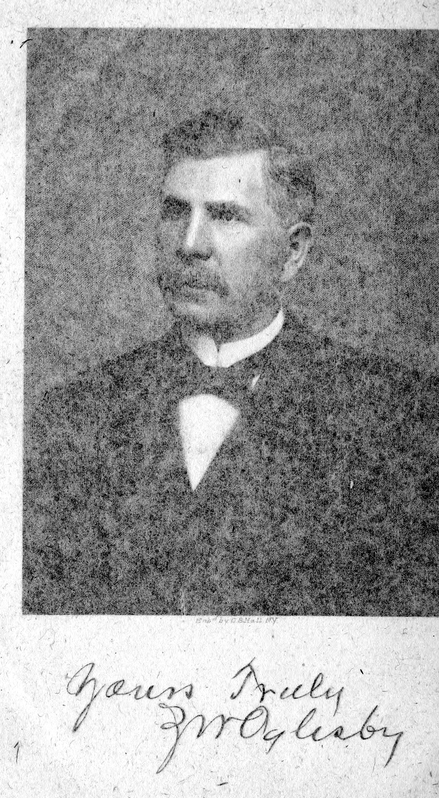

Zenas Wise Oglesby Sr.
Back to the Railroad Organizers index
Online research dossier
Prepared August 19, 2026
Identity verdict
The South Georgia Railway officer was Zenas Wise Oglesby Sr., also printed as Zeanas, Zenos, "Zean", "Zeno", "Geneus", and most often Z. W. Oglesby. He was born in Cobb County, probably at Marietta, Georgia, on September 8, 1850, and died while under treatment for cancer in Madison, Florida, on January 6, 1915.[1][22][27]
This identification is verified. Contemporary corporate reports, federal censuses, the 1908 biography, death notices, and the photographed mausoleum plate form a continuous identity chain. The spelling variations are transcription and contemporary usage, not separate men.
Three namesakes require care:
- Zenas Wise Oglesby Jr., his son, was born in 1881 and died on February 21, 1914. A February 22 dispatch says the death occurred “last night,” and the photographed plate agrees. Huxford's February 28 date is wrong.[28][29]
- James Wood Oglesby Sr., Zenas's younger brother and business partner, was president of the South Georgia Railroad/Railway. Zenas was superintendent and a director.[6][10][17]
- J. J. or Joe J. Oglesby, another brother, also appeared in the original railroad board and family reporting.[1][6]

Zenas Wise Oglesby Sr. Portrait and signature from Men of Mark in Georgia, volume 4, pp. 345-347, via Internet Archive.
Main findings
- The original 1880 census places Zenas, wife Lillie, three young daughters, his mother Elizabeth, and a niece in Kingston, Georgia. The 1900 and 1910 originals continue the household into Quitman.[2][3][4]
- Zenas and James jointly patented a cotton-gin feeder in 1884. Patent US293772A is direct proof of at least one invention; the later claim that they held “many patents” remains unverified as a total.[5]
- In March 1896 stockholders elected a nine-member South Georgia Railroad board. James became president and Zenas superintendent. The board structure disproves sole ownership by either brother.[6]
- Contemporary records and the 1910 census verify Zenas as superintendent. He remained the titled superintendent until death, although nephew Wilbur Oglesby had acted in the role for more than a year by January 1915.[4][10][11][17][24]
- Men of Mark says James and Zenas together owned a majority of the South Georgia and West Coast railroad stock. That is strong probable, not stock-ledger proof. Exact shares remain unknown.[1]
- Zenas held substantial lumber, naval-stores, banking, grocery, and other corporate interests. Several offices are reported in a detailed lifetime biography and supported in part by charter and newspaper records, but no complete stock or property portfolio was located.[1][13][14][15][16][18]
- He was a major benefactor of Quitman's Presbyterian church and shared the cost of its pipe organ with Andrew Carnegie. The evidence establishes philanthropy; church membership is strong probable rather than direct.[19][23]
- A Brooks County administrator's bond dated February 1, 1915 proves estate administration. It does not substantiate a later newspaper estimate of a $5 million estate or a supposed one-fourth share for daughter Mabel.[25][36]
- The photographed plate confirms the exact birth and death dates. Funeral geography and the memorial place the Oglesby Mausoleum in Oak Hill Cemetery, Quitman.[23][27]
Origins and household
The 1908 fourth volume of Men of Mark in Georgia identifies Zenas as a son of cotton-gin manufacturer Thomas I. Oglesby and Elizabeth Johnson Wood. It names six sons in the family: Garrett, Joseph, William, John, Zenas, and James. The account is detailed and was published during Zenas's lifetime, but it is promotional biography rather than an original birth, Bible, or probate record. Parentage and the complete sibling list are therefore strong probable. Contemporary death notices independently verify James and Garrett as brothers, and 1914 coverage verifies Joe J. as another brother.[1][21][29]
The original 1880 population schedule is the earliest directly inspected household record. In Kingston, Bartow County, it lists a badly indexed "Zean W. Oglesby", age 29, as a manufacturer. His household included wife Lillie M., daughters Mabel C., Kate E., and Mozelle, his mother Elizabeth Oglesby, age 63, and a 13-year-old niece also named Elizabeth. The schedule says the elder Elizabeth was born in Virginia. It does not give her maiden name.[2]
Men of Mark says Zenas married Lilla Moselle Leake on January 14, 1874 and names six children: Mabel Clare, Kate, Moselle, Zenas Wise Jr., Harold, and Lewood.[1] The census chain supports the spouse and household structure:
- In 1900 the Quitman household included Lillie and all six named children. Zenas was recorded as a pine-lumber manufacturer. The schedule reported a 25-year marriage, placing it about 1874-1875.[3]
- In 1910 Zenas and Lillian had been married 36 years. Daughters Kate, Mozelle, and Lewood lived with them, along with Zenas Jr. and his wife Juanita. The children-born/living fields are difficult to read and appear inconsistent with the 1900 schedule and the six-child biography, so they are not used to reconstruct additional children.[4]
- The 1915 obituary names five surviving children. Zenas Jr.'s death the previous year reconciles five survivors with the six-child family.[21][29]
The exact January 14 marriage date is strong probable, not directly verified. An exact and a broad search of the Ancestry Georgia marriage collection did not locate the original entry.
The censuses also contain normal age discrepancies. The 1900 schedule gives September 1852, while 1880 and 1910 imply about 1850-1851. The exact plate, the 1908 biography, and the 1915 obituary age support September 8, 1850.[1][2][3][4][27]
Cotton-gin manufacturing and patent
Before the lumber and railroad period, Zenas and James manufactured cotton gins. Men of Mark places that partnership in 1879-1891 and says the brothers secured many patents.[1]
One patent is directly verified. United States Patent 293,772, issued February 19, 1884, names James Wood Oglesby and “Zenos Wise Oglesby,” of Kingston, Georgia, as joint inventors of a cotton-gin feeder. The specification describes a machine intended to remove debris, loosen cotton, and feed it evenly while reducing manual labor.[5]
An 1884 newspaper patent list described two joint inventions, but this research conclusively matched only US293772A. Zenas was a verified joint inventor; a complete patent portfolio has not been proved.
Lumber and connected enterprises
The brothers shifted their emphasis to lumber around 1891. By October 1897 Oglesby & Bro. mills at Heartpine and Barney were running full time on passenger-car-sill orders. Reporting also linked the business to timber acquired along a contemplated rail corridor.[8]
In March 1899 a more specific report said J. W. and Z. W. Oglesby together planned a roughly six-mile branch from Barney toward Valdosta through newly acquired timber. Rails and a switch had been purchased. The article proves a developed plan and joint timber interest; it does not prove that the branch was completed exactly as announced.[9]
Zenas's 1908 biography lists him as:
- president and director of the West Coast Lumber Company;
- a director of the Oglesby Lumber and Manufacturing Company;
- a director of the Inter-State Lumber Company;
- a director of the Perry Naval Stores Company;
- a director of the First National Bank of Quitman;
- a director of the South Georgia Grocery Company.[1]
These are specific lifetime claims, not anonymous later tradition. Newspapers and charter notices independently support parts of the network. A 1904 Perry Naval Stores charter report names Zenas among the stockholders; 1905 reporting calls him an Oglesby Lumber vice president and places James and Zenas among the principal stockholders of the new $200,000 Inter-State Lumber Company. A 1909 charter petition names "Z. W. Oglesby, Sr." in the $30,000 Miller Furniture Company of Athens.[13][14][15][16]
The named charter and newspaper roles are verified as contemporaneously reported. The full Men of Mark office list is strong probable because minutes, share certificates, and exact ownership percentages were not found.
Federal banking reports identify James, not Zenas, as president of the First National Bank in both 1906 and 1910.[30][31] Zenas should be described as a director, never as bank president. The bank's closure for his funeral confirms his close institutional connection but not a specific shareholding.[23]
A March 1910 newspaper documents Zenas and three partners purchasing a 68-by-100-foot Spring and Luckie Streets lot in Atlanta for $22,500 as an investment.[18] His death notice called him a large Brooks County landowner and a large stockholder in many Quitman businesses.[22] Those reports prove substantial holdings, not a complete inventory.
South Georgia Railroad and Railway
Organization and office
On March 23, 1896 South Georgia Railroad stockholders accepted the charter, adopted bylaws, and elected nine directors: F. J. Spain, J. W. Hopson, J. G. McCall, R. C. McIntosh, J. W. Oglesby, J. W. Hitch, A. J. Rountree, Z. W. Oglesby, and J. J. Oglesby. The directors elected James president and Zenas superintendent.[6]
That contemporary report settles the office question. Zenas was an original director and superintendent, not president. Its reference to stockholders and calls for stock payments proves the railroad was not a two-person partnership; the nine-member board independently shows broader corporate governance.[6]
The Heartpine-Quitman line was still nearing completion in April 1896. Specialist railroad histories date opening to March 1897, which fits the contemporary chronology better than the 1908 biography's claim that it was completed during 1896.[7]
Zenas's office continued:
- The March 1899 annual meeting returned him to a nine-member board. The following month's directors' meeting reelected him superintendent.[10][11]
- The 1910 federal census records his occupation as superintendent, railroad.[4]
- A March 1910 profile still listed Zenas as superintendent, James as president, R. C. McIntosh as vice president, C. T. Tillman as treasurer, and C. I. Harrell as general freight and passenger agent.[17]
- Death notices in January 1915 again called him superintendent.[21]
The official 1903 Georgia Railroad Commission report shows the operating line running from Heartpine to Greenville, with Quitman at mile 29 and Greenville at mile 51; 38.69 miles lay in Georgia. It does not name Zenas, but it fixes the system he supervised.[12]
Ownership and control
Men of Mark says the brothers “built, equipped and now own, a majority of the stock” of the South Georgia and West Coast railroad operations. The adjacent James sketch calls James the largest individual shareholder.[1]
Read together with the corporate reporting:
James was president and largest individual shareholder; Zenas was superintendent and a director; the brothers together probably held Oglesby-family majority control.
No stock ledger was located. Calling Zenas sole owner, president, or the railway's only builder is unsupported. Even saying that each brother owned an equal railroad share goes beyond the evidence; the biography's equal-interest wording concerns their associated enterprises generally and supplies no railroad stock table.
Succession
After Zenas's death, directors appointed James's son Wilbur Oglesby superintendent. The January 1915 report said Wilbur had already served as acting superintendent for more than a year. Zenas therefore retained the title during his final period while day-to-day duties had partly shifted by about 1913.[24]
Florida interests and Hampton Springs
Zenas had real Florida business ties. Men of Mark names his West Coast Lumber, Inter-State Lumber, and Perry Naval Stores offices and links the brothers to West Coast railroad stock.[1][13][15]
No inspected source proves that Zenas personally bought, owned, or managed Hampton Springs. The James Wood Oglesby biography and Huxford assign the resort's development to James. A 1912 report says James and Zenas bought three motorboats for Hampton Springs, but its later ownership wording is ambiguous.[32] Shared railroad and lumber interests made the resort part of the family business network; they do not establish Zenas's title.[28]
Contemporary social notices instead place Zenas at a winter home in Boardman, Florida, and a summer home at White Sulphur Springs, Georgia. Those seasonal residences should not be confused with resort ownership.
Civic, religious, and political activity
In 1902 Zenas joined other named prohibitionists in obtaining an injunction that delayed a Brooks County local-option election because it had been scheduled in the same month as a general election.[20] This is direct evidence of his participation in a local political controversy. No candidacy or elected office was found in the documented searches.
His support for Quitman's Presbyterian church is better documented. A 1910 report said a pipe organ for the new church had become assured through Andrew Carnegie and Z. W. Oglesby. Funeral coverage later said the church had been built largely through Zenas's gifts.[19][23] These reports verify substantial philanthropy. They make membership likely, but neither expressly records his membership.
The 1908 biography calls him a Democrat and a Presbyterian and mentions bird hunting.[1] The first two statements are consistent with the newspaper record, but they remain biographical descriptions rather than a party roll or church register.
Court matters and family controversies
A 1908 G. A. Carswell Company bankruptcy report referred to a proposed compromise of a claim against Z. W. Oglesby. Another paper called him the company's former president but mangled the claim as belonging to the “estate” of Z. W. Oglesby even though he was alive.[33] Without the original bankruptcy file, the claim's direction, his precise role, and the disposition remain unresolved.
In 1912 his son Harold faced charges for assault and battery and public indecency. The reported conduct was Harold's, not Zenas's. Zenas's documented role was asking the judge to impose sentence.[34] The incident must not be turned into a criminal allegation against the father.
After Zenas's death, daughter Lewood challenged custody and property arrangements concerning her sister Mabel in New York. The reported allegations against Mabel's husband were disputed, and the court did not decide them in the reported proceeding. That coverage estimated Zenas's estate at about $5 million and called Mabel a future one-fourth beneficiary.[36] The fraction conflicts with the reported five surviving children, and no inventory or distribution order was located. Both the valuation and beneficiary fraction are unverified newspaper claims.
The documented searches found no conclusive personal criminal charge, divorce, personal bankruptcy, candidacy, or fully litigated probate contest involving Zenas. That means not found in the documented search, not that none existed.
Illness, death, funeral, probate, and burial
Zenas died at a Madison, Florida, sanitarium on January 6, 1915. The Macon Telegraph reported 3:30 p.m.; the Atlanta Constitution reported about 4 p.m. The latter said he had been under treatment for cancer for several weeks.[21][22] The date, place, and treatment are verified; no death certificate was inspected, so a formal medical cause remains unavailable.
A special train brought the body to Quitman. Funeral services were held January 8 at the Presbyterian church. The First National Bank and Inter-State Lumber Company closed, railway engines carried mourning decorations, and trains on the South Georgia Railway and Valdosta, Moultrie & Western stopped for thirty minutes during the service.[23]
The Georgia death-record collection indexes "Zeanas Wise Oglesby" and links spouse Lilla Mozelle Leake and daughter Moselle Peters. It does not display a death date or cause in the indexed detail and therefore adds identity support rather than replacing the contemporary reports.
An original Brooks County administrator's-bond volume contains an indexed Z. W. Oglesby estate entry dated February 1, 1915.[25] It proves that estate administration opened in Brooks County. The inspected entry is not a will or inventory and does not prove the $5 million estimate. An April newspaper reported a $2,700 inheritance-tax payment by the estate; it likewise does not establish gross value.[26]
Find a Grave memorial 16987676 places him in Oak Hill Cemetery, Quitman. Its attached photographed plate reads:
ZEANAS WISE OGLESBY
BORN SEPT. 8, 1850
DIED JANUARY 6, 1915
The photograph directly verifies the inscription. Funeral geography and the cemetery memorial make the Oak Hill Oglesby Mausoleum identification strong and consistent, although no burial register or geolocated cemetery overview was inspected.[23][27]
Claims audit
| Claim | Finding |
|---|---|
| Zenas was president of the South Georgia Railway. | Contradicted. James was president; Zenas was superintendent and director. |
| Zenas and James were the railroad's only owners. | Overstated. The corporation had other stockholders and a nine-member board. |
| The brothers had equal railroad shares. | Not proved. Joint family majority control is strong probable; exact shares are unknown. |
| Zenas personally owned Hampton Springs. | Not proved. Inspected development narratives assign it to James. |
| Zenas held many patents. | Partly verified. US293772A directly proves one joint patent; the total remains unresolved. |
| Zenas was president of the First National Bank. | Contradicted. James was president; Zenas is reported as a director. |
| Zenas's church membership is proved by his gifts. | Too strong. Benefaction is verified; membership is strong probable. |
| His estate was worth $5 million. | Unverified. This is a later newspaper estimate, not probate-inventory proof. |
| The administrator's bond proves the estate value. | False. It proves administration began, not value or distribution. |
| Zenas Jr. died February 28, 1914. | Contradicted. A February 22 dispatch says he died “last night,” and the marker reads February 21. |
| No personal litigation was found, so none existed. | Unsupported. Legal-database and newspaper coverage was incomplete. |
What remains unresolved
- Original birth, baptism, family Bible, or parental probate proof;
- the original marriage entry and direct proof of the exact January 14, 1874 date;
- South Georgia and West Coast stock ledgers and exact share percentages;
- complete minutes for the railroad and related lumber, naval-stores, bank, and grocery companies;
- a complete list of patent numbers;
- whether the announced 1899 Barney timber branch was completed exactly as proposed;
- a complete Brooks, Atlanta, and Florida deed portfolio;
- personal Hampton Springs title or management, for which no proof was found;
- a will, probate petition, inventory, distribution order, and complete estate file;
- a comprehensive state and federal litigation search;
- a burial register or independently geolocated mausoleum record;
Research coverage
The project searched saved local evidence first, then contemporary newspapers, official railroad reports, patent records, original federal census images, a Brooks County probate image, Find a Grave photographs, lifetime biography, and later county history. Name and namesake variants were controlled. Newspapers.com and Georgia Historic Newspapers searches covered 1880-1940 with documented exact-name and topic queries.[35]
Newspaper OCR and relevance ranking can miss material. No stock ledger, full probate file, or original marriage image was located.
Numbered sources
- William J. Northen, ed., Men of Mark in Georgia, vol. 4 (Atlanta: A. B. Caldwell, 1908), 341-347, Internet Archive item
menofmarkingeorg04nort. - 1880 U.S. census, Kingston, Bartow County, Georgia, ED 005, p. 473a, NARA T9 roll 134; Ancestry collection 6742, record 7434029, image
4240126-00129. - 1900 U.S. census, Quitman, Brooks County, Georgia, ED 0006, sheet 22; Ancestry collection 7602, record 52867813, image
4119687_00607. - 1910 U.S. census, Quitman, Brooks County, Georgia, ED 0016, sheet 20B, NARA T624 roll 174; Ancestry collection 7884, record 3196875, image
31111_4327473-00310. - U.S. Patent 293,772, James Wood Oglesby and Zenos Wise Oglesby, “Cotton-Gin Feeder,” issued February 19, 1884, https://patents.google.com/patent/US293772A/en.
- “The South Georgia,” Savannah Morning News, March 24, 1896, p. 2, Newspapers.com image 852573116.
- Savannah Morning News, April 22, 1896, p. 3, Newspapers.com image 852576126; RailGa, “South Georgia Railway,” https://railga.com/soga.html.
- Valdosta Times, October 26, 1897, p. 3, Newspapers.com image 889778923.
- Valdosta Times, March 14, 1899, p. 3, Newspapers.com image 889670505.
- Atlanta Constitution, March 30, 1899, p. 3, Newspapers.com image 26826945.
- Atlanta Constitution, April 20, 1899, p. 3, Newspapers.com image 26956586.
- Georgia Railroad Commission, Thirty-First Report (1903), printed pp. 88, 133, Internet Archive item
reportrailroadc01unkngoog. - Valdosta Times, March 29, 1904, p. 1, Newspapers.com image 889682528.
- Atlanta Constitution, November 12, 1905, p. 10, Newspapers.com image 26834164.
- Valdosta Daily Times, December 23, 1905, p. 4, Newspapers.com image 889774277.
- “Petition for Charter,” Athens Banner, September 10, 1909, p. 3, Georgia Historic Newspapers.
- Atlanta Journal, March 27, 1910, p. 12, Newspapers.com image 970009549.
- Atlanta Constitution, March 19, 1910, p. 7, Newspapers.com image 26795994.
- Atlanta Journal, April 24, 1910, p. 39, Newspapers.com image 969903663.
- Valdosta Times, November 18, 1902, p. 6, Newspapers.com image 889692700.
- “Z. W. Oglesby Dies at Sanitarium in Florida,” Macon Telegraph, January 7, 1915, p. 3, Newspapers.com image 825534227.
- “Z. W. Oglesby, Quitman,” Atlanta Constitution, January 7, 1915, p. 12, Newspapers.com image 26881673; preserved clipping photograph 94850104.
- Macon Telegraph, January 9, 1915, p. 10, Newspapers.com image 825534407.
- Macon Telegraph, January 16, 1915, p. 2, Newspapers.com image 825534874; parallel Atlanta Constitution, January 16, p. 7, image 26881920.
- Georgia Court of Ordinary, Brooks County, Administrators Bonds, 1891-1951, February 1, 1915; Ancestry collection 8635, record 361095, image
005782592_00139. - Valdosta Daily Times, April 17, 1915, p. 8, Newspapers.com image 889228883.
- Find a Grave memorial 16987676, Oak Hill Cemetery, attached photographed plate 4766262.
- Folks Huxford, The History of Brooks County, Georgia, 1858-1948 (1948), 523-525.
- “Z. W. Oglesby, Jr.,” Macon Telegraph, February 23, 1914, p. 5, Newspapers.com image 825495185; Atlanta Journal, February 23, 1914, p. 16, image 970040357; Find a Grave memorial 16987816, plate 4766346.
- U.S. Comptroller of the Currency, Annual Report (1906), First National Bank of Quitman, charter 7994, Internet Archive item
annualreportofco1906offi. - U.S. Comptroller of the Currency, Annual Report (1910), Georgia national-bank officer table, Internet Archive item
annualreportofco1910offi. - Macon Telegraph, March 4, 1912, p. 2, Newspapers.com image 825580815.
- Valdosta Daily Times, January 13, 1908, p. 2, Newspapers.com image 889726482; Brunswick News, January 19, 1908, p. 2, image 859999781.
- Atlanta Constitution, November 15, 1912, p. 4, Newspapers.com image 34151475.
- Valdosta Daily Times, May 21, 1915, p. 1, Newspapers.com image 889231430.